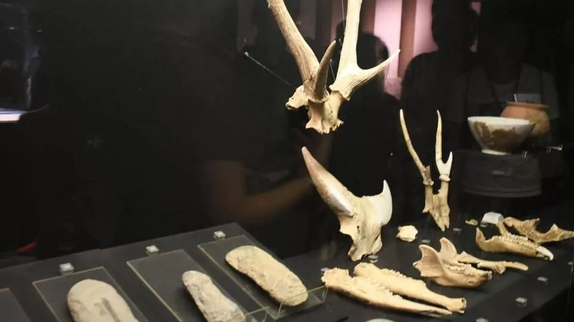
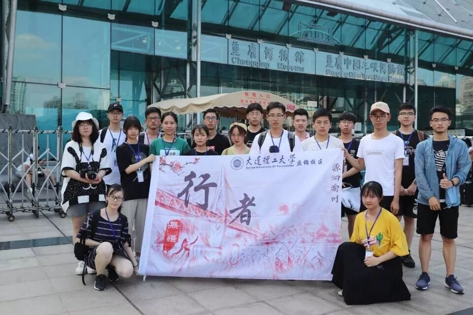

【行者无疆 源洄渝州】执素笔结行程，行千里致广大
一条石板路，千年磁器口。
一江连两溪，三山坐龙庭。
白日千人拱手，入夜万盏明灯。


在行程的最后一日上午，行者们来到了久负盛名的磁器口古镇。磁器口作为老重庆缩影，传统街与民俗风交融，院落中美食香飘十里。巴渝风、红岩魂、陪都情，磁器口尽有之。伴随重庆愈发“网红”，磁器口中也愈发摩肩接踵。


宝轮寺中香火稀，
美食街上行路难。
从最初的白岩场，到如今的磁器口，几度更名鲜为人知。码头迁移，产业衰落，昔日繁荣难再复，文化底蕴存几分？合理的商业发展让磁器口重新焕发生计自然是好，可当古镇在外人眼里成为一个纯粹的“市场”时，在行者看来，古镇文化的已被贬低。繁华千年的磁器口却被商业街掩盖住了底蕴深后的历史文化光辉。古镇蒙尘，令行者痛心。文化保护，刻不容缓。
//////////
三峡
朝辞白帝彩云间，
千里江陵一日还。
两岸猿声啼不住，
轻舟已过万重山。


自三峡七百里中
两岸连山，略无阙处
作为巴山蜀水代表的三峡，岂能忘却？调研行程最后一站，行者们来到了重庆三峡博物馆。长江三峡是地球上最具造化能力、最富人文情怀的大河峡谷。它凭依着雄奇壮丽悠远深邃的景观成为了美丽长江的标志性河段；以绵延不绝积淀厚重的历史成为了长江文明最华彩的乐章。翟塘峡两侧峰高巍峨，气势不绝；巫峡两岸山峰绵延起伏，秀丽多姿；西陵峡湍流疾水，险象丛生。湍急的水流应运而生了纤夫这一职业，而纤绳在礁石上留下的沟壑，便是悠久的纤夫精神最原始的体现。


一个古代诗人口中的凄凉地，现如今已成为直辖市，重庆的逆袭要从晚清的移民开始。西方人的到来，带来磨难的同时却也传入了先进的西方技术。重庆人豪爽洒脱的生活观，使得当时的先进技术被当地人民完美运用。在重庆作为战时陪都期间，各地文人工匠汇聚于此，重庆因此搭乘上了经济文化腾飞的快车。从此以后，重庆一路高歌猛进，成为了西南地区的中心。
坝上碧波万顷，坝下大江东去。三峡大坝的修建，使得许多人民迁出故土。这不是一个简单的经济算式，更是一本政治账、情感账。挥一挥手，作别故园的千重稻菽；鞠一鞠躬，叩别黄土下的祖辈魂灵。三峡百万移民创造出了一种中华民族新的三峡精神；并上历史上成渝铁路的修筑、钓鱼城从抵御蒙古入侵到和平投降……舍小家为大家，一切为了人民的观念，从古至今，未曾断绝。几次外来移民给重庆带来了发展契机，而本土居民的外迁也为世人带来了感动。
//////////
珍惜最后的行程，我们是最好的行者。


伴随着火锅的腾腾热气，行者们的重庆调研之路暂告一段落。赏不够的巴渝美景、品不完的多元文化、道不尽的万千思绪，汇成一份浓浓的不舍与眷恋。但行者的脚步未曾停歇，文化传承还在继续。
来源丨行者无疆实践团
文字丨张锐
排版丨康艳虎 邓子孚
审核丨邓子孚 段智然
行者无疆实践团
QQ：2758025831

随行者一起认识世界
长按二维码关注